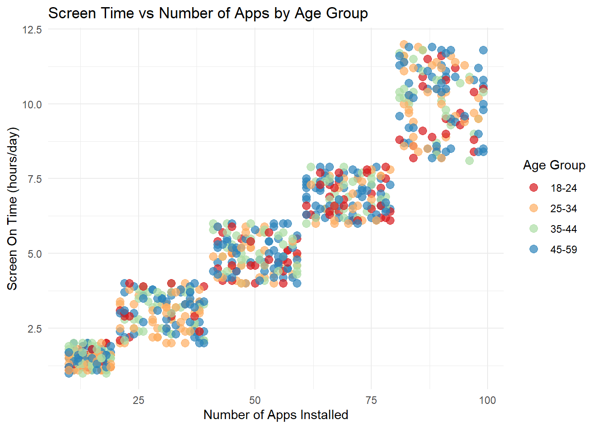

# Require will load the package if available and return FALSE if not available by adding the ! we will return TRUE if the package is not available, running the code in the if statementif(!require(tidyverse)){# If package is not available, install it then load it againinstall.packages("tidyverse")library(tidyverse)}
Loading required package: tidyverse
── Attaching core tidyverse packages ──────────────────────── tidyverse 2.0.0 ──
✔ dplyr 1.1.4 ✔ readr 2.1.5
✔ forcats 1.0.0 ✔ stringr 1.5.1
✔ ggplot2 3.5.1 ✔ tibble 3.2.1
✔ lubridate 1.9.4 ✔ tidyr 1.3.1
✔ purrr 1.0.2
── Conflicts ────────────────────────────────────────── tidyverse_conflicts() ──
✖ dplyr::filter() masks stats::filter()
✖ dplyr::lag() masks stats::lag()
ℹ Use the conflicted package (<http://conflicted.r-lib.org/>) to force all conflicts to become errors
# Does same as above for other packagesif(!require(tidyr)){install.packages("tidyr")library(tidyr)}if(!require(readr)){install.packages("readr")library(readr)}if(!require(ggplot2)){install.packages("ggplot2")library(ggplot2)}if(!require(dplyr)){install.packages("dplyr")library(dplyr)}if(!require(janitor)){install.packages("janitor")library(janitor)}
Loading required package: janitor
Attaching package: 'janitor'
The following objects are masked from 'package:stats':
chisq.test, fisher.test
Rows: 700 Columns: 11
── Column specification ────────────────────────────────────────────────────────
Delimiter: ","
chr (3): Device Model, Operating System, Gender
dbl (8): User ID, App Usage Time (min/day), Screen On Time (hours/day), Batt...
ℹ Use `spec()` to retrieve the full column specification for this data.
ℹ Specify the column types or set `show_col_types = FALSE` to quiet this message.
#create a categorical variable based on a numeric variable age to create an age group and recode user_behavior_class variable to add descriptive label as the values are numeric 1-5.userBehavior <- userBehavior |>mutate(age_group =case_when( age <18~"Under 18", age >=18& age <25~"18-24", age >=25& age <35~"25-34", age >=35& age <45~"35-44", age >=45& age <60~"45-59", age >=60~"60+",TRUE~NA_character_ ),user_behavior_class_label =case_when( user_behavior_class ==1~"Minimal User", user_behavior_class ==2~"Light User", user_behavior_class ==3~"Moderate User", user_behavior_class ==4~"Heavy User", user_behavior_class ==5~"Power User",TRUE~NA_character_))# change datatype from character to factor, dbl to character for user ID.userBehavior <- userBehavior |>mutate(user_id=as.character(user_id),operating_system =as.factor(operating_system),gender =as.factor(gender),user_behavior_class =as.factor(user_behavior_class) )# to maintain my order and not let R order it alphabetically userBehavior$user_behavior_class_label <-factor( userBehavior$user_behavior_class_label,levels =c("Minimal User", "Light User", "Moderate User", "Heavy User", "Power User"),ordered =TRUE)userBehavior
#these one way contingency tables show the gender, operating system and user behavior distribution in the dataset.tab_gender <-table(userBehavior$gender)tab_gender
Minimal User Light User Moderate User Heavy User Power User
Female 63 64 82 67 60
Male 73 82 61 72 76
table_os_gender <-table(userBehavior$operating_system, userBehavior$gender)prop.table(table_os_gender, margin =2) # proportions within gender
Female Male
Android 0.7797619 0.8021978
iOS 0.2202381 0.1978022
Numerical summaries for quantitative variables by categorical groups
# we can use the across() function and summarize all numeric variables at once userBehavior |>summarize(across(where(is.numeric), list("mean"= mean, "median"= median,"Std"=sd) , .names ="{.fn}_{.col}"))
# This is summary of quantitative variables by user behavior classes (categorical). userBehavior |>group_by(user_behavior_class_label) |>summarise(mean_app_usage =mean(app_usage_time_min_day, na.rm =TRUE),median_app_usage =median(app_usage_time_min_day, na.rm =TRUE),sd_app_usage =sd(app_usage_time_min_day, na.rm =TRUE),mean_data_usage =mean(data_usage_mb_day, na.rm =TRUE),median_data_usage =median(data_usage_mb_day, na.rm =TRUE),sd_data_usage =sd(data_usage_mb_day, na.rm =TRUE) )
# A tibble: 5 × 7
user_behavior_class_label mean_app_usage median_app_usage sd_app_usage
<ord> <dbl> <dbl> <dbl>
1 Minimal User 60.4 64 17.2
2 Light User 132. 132. 25.5
3 Moderate User 235. 229 34.1
4 Heavy User 396. 405 52.2
5 Power User 541. 540 31.1
# ℹ 3 more variables: mean_data_usage <dbl>, median_data_usage <dbl>,
# sd_data_usage <dbl>
Graphical Summaries
Plot 1: Distribution of user behavior class (Univariate Bar Plot)
ggplot(userBehavior|>drop_na(user_behavior_class_label), aes(x = user_behavior_class_label, fill = user_behavior_class_label)) +geom_bar() +scale_fill_manual(values =c("Minimal User"="#00B050", # green"Light User"="#92D050", # light green"Moderate User"="#FFC000", # yellow"Heavy User"="#FF7043", # orange"Power User"="#C00000"# red ),name ="User Behavior Classes" ) +labs(title ="Distribution of User Behavior Classes",x ="User Behavior Class", y ="Count") +theme_minimal()
Plot 2: App Usage Time by Behavior Class (Boxplot)
ggplot(userBehavior |>drop_na(user_behavior_class, app_usage_time_min_day), aes(x = user_behavior_class, y = app_usage_time_min_day, fill = user_behavior_class_label)) +geom_boxplot() +scale_fill_manual(values =c("Minimal User"="#00B050", # green"Light User"="#92D050", # light green"Moderate User"="#FFC000", # yellow"Heavy User"="#FF7043", # orange"Power User"="#C00000"# red ),name ="User Behavior Classes" ) +labs(title ="App Usage Time by User Behavior Class",x ="User Behavior Class", y ="App Usage (min/day)") +theme_minimal()
Plot 3: App usage by age group
l
g <-ggplot(userBehavior |>drop_na(app_usage_time_min_day, age_group) ,aes(x = age_group, y = app_usage_time_min_day, fill = age_group))g +geom_boxplot() +labs(title ="App Usage by Age Group",y ="App Usage (min/day)",x ="Age Group" ) +theme_minimal()
Plot 4: Distribution of operating system by gender (Boxplot)
g <-ggplot(data = userBehavior |>drop_na(gender, operating_system), aes(x = gender, fill = operating_system))g +geom_bar(position ="dodge")+labs(title ="Operating System Type by Gender", x ="Gender")+scale_fill_discrete("Operating System")
Plot 5: Data Usage by Behavior Class and Gender (Multivariate Boxplot with Grouping)
# Multivariate (Behavior class X Gender)ggplot(userBehavior, aes(x = user_behavior_class, y = data_usage_mb_day, fill = gender)) +geom_boxplot(position =position_dodge(width =0.8)) +labs(title ="Data Usage by Behavior Class and Gender",x ="User Behavior Class", y ="Data Usage (MB/day)", fill ="Gender") +theme_minimal()
Plot 6: App Usage vs Data Usage colored by Operating System (Scatterplot)
ggplot(userBehavior, aes(x = app_usage_time_min_day, y = data_usage_mb_day, color = operating_system)) +geom_point(alpha =0.7) +geom_smooth(method ="lm", se =FALSE, color ="black") +labs(title ="Relationship Between App Usage and Data Usage by OS",x ="App Usage (min/day)", y ="Data Usage (MB/day)", color ="OS") +theme_minimal()
`geom_smooth()` using formula = 'y ~ x'
Plot 7: App Usage vs Data Usage colored by Operating System (Scatterplot)
ggplot(userBehavior, aes(x = number_of_apps_installed,y = screen_on_time_hours_day,color = age_group,size = age_group, )) +geom_point(alpha =0.7, size =3) +scale_color_brewer(palette ="Spectral") +labs(title ="Screen Time vs Number of Apps by Age Group",x ="Number of Apps Installed",y ="Screen On Time (hours/day)",color ="Age Group", ) +theme_minimal()

Plot 8: Boxplots with Points Screen time by gender
l
g <-ggplot(userBehavior |>drop_na(screen_on_time_hours_day, gender) ,aes(x = gender, y = screen_on_time_hours_day, fill = gender))g +geom_boxplot() +geom_jitter(width =0.2, alpha =0.3)+labs(title ="Screen Time by Gender",y ="Screen On Time (hours/day)",x ="Gender" ) +theme_minimal()
Plot 9: Faceted Boxplots for Multiple Metrics
userBehavior |>select(user_behavior_class, app_usage_time_min_day, screen_on_time_hours_day, battery_drain_m_ah_day) |>pivot_longer(-user_behavior_class, names_to ="metric", values_to ="value") |>ggplot(aes(x = user_behavior_class, y = value, fill = user_behavior_class)) +geom_boxplot() +facet_wrap(~ metric, scales ="free_y") +labs(title ="Device Metrics by User Behavior Class",x ="User Behavior Class", y ="Value") +theme_minimal() +theme(legend.position ="none")
Plot 10: Scatter plot: screen time vs app usage by age group
ggplot(userBehavior, aes(x = app_usage_time_min_day,y = screen_on_time_hours_day,color = user_behavior_class_label)) +geom_point(alpha =0.7, size =2.5) +scale_color_manual(values =c("#00B050","#92D050","#FFC000","#FF7043","#C00000")) +facet_wrap(~age_group) +labs(title ="Screen Time vs Number of Apps by Age Group",x ="App Usage Time (Min/day)",y ="Screen On Time (hours/day)" ) +theme_minimal()
Plot 11: Heatmap of Correlations (Not covered in class)